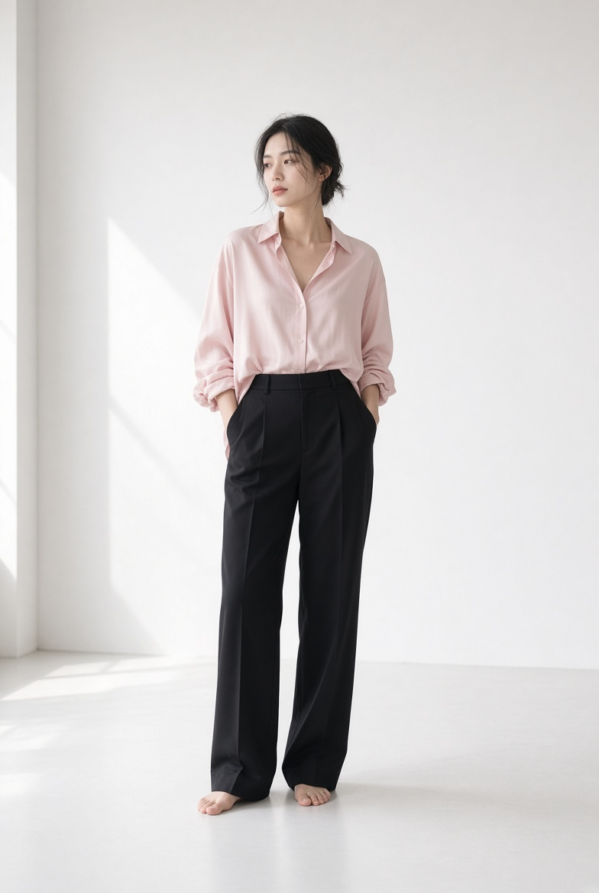
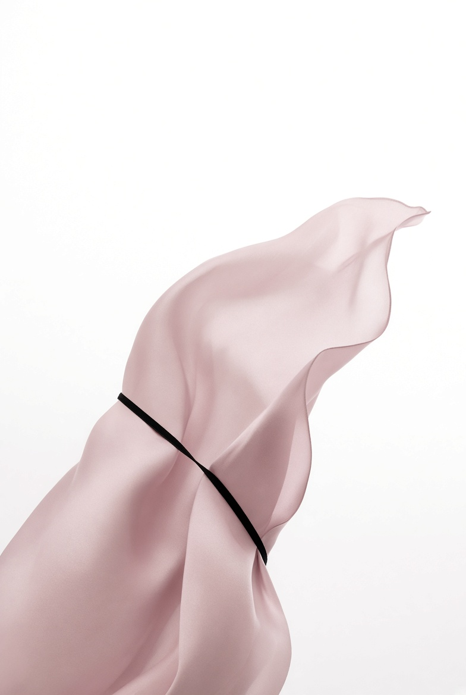
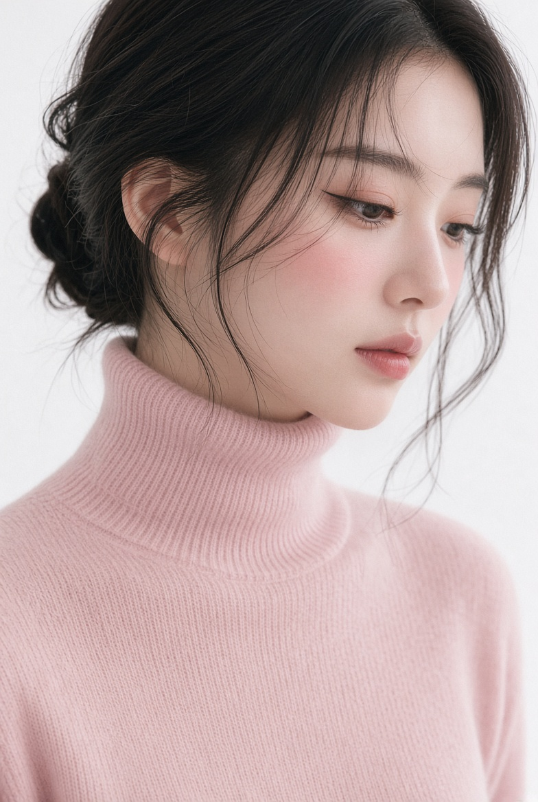
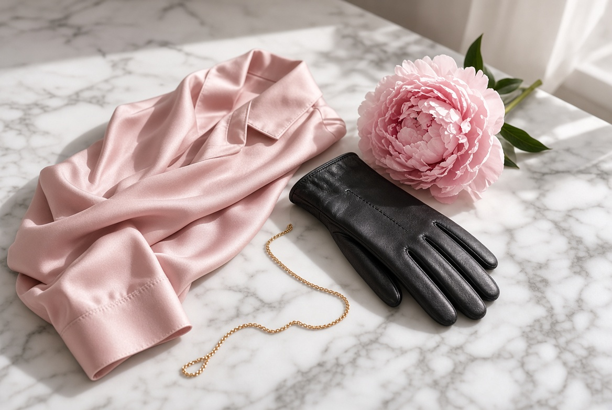
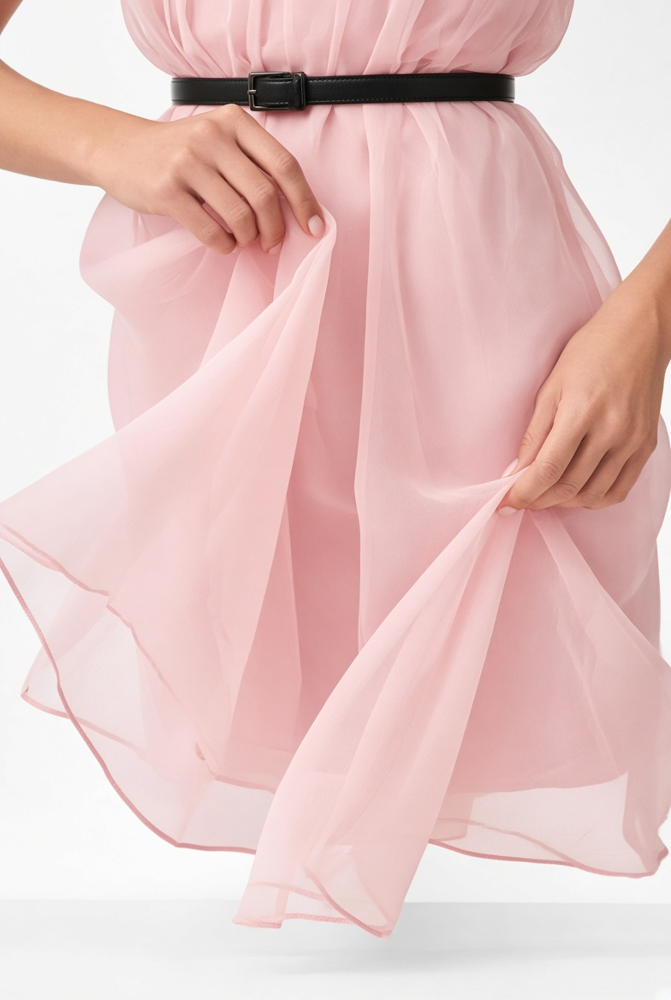
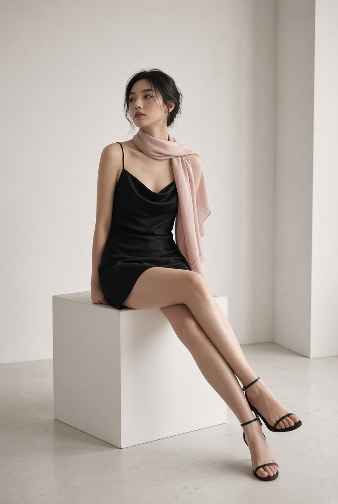
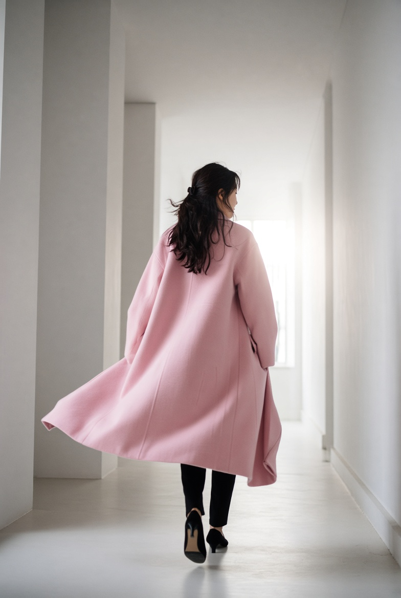
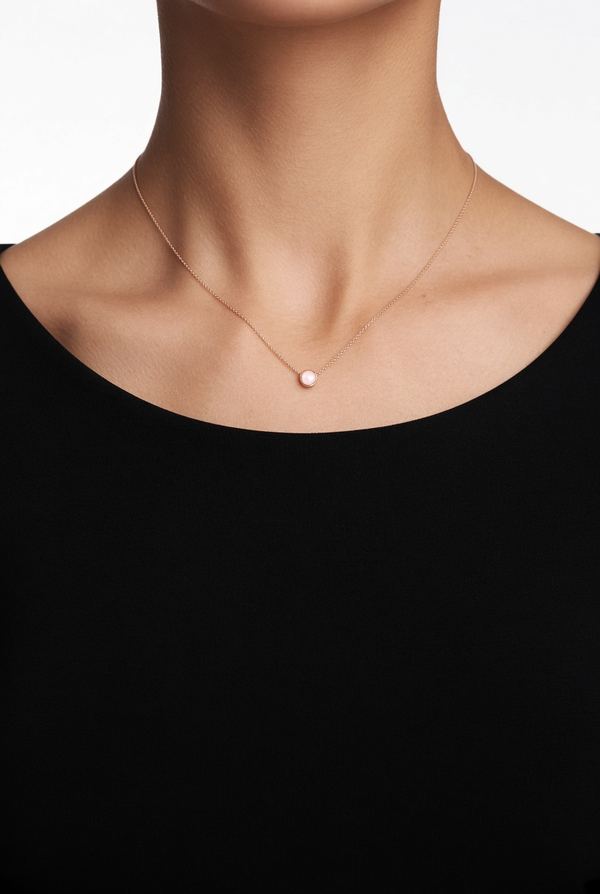

Plate 01
Standing
오버사이즈 핑크 셔츠와 하이웨스트 블랙 팬츠. 맨발. 왼쪽에서 들어온 낮빛.

Lookbook · Vol. 01
화이트 공간 위의
파스텔 핑크와 블랙.
A quiet sequence of silk, wool, and shadow.
여백을 크게 두고, 색은 세 가지만 남겼습니다.
흰 스튜디오, 옅은 핑크, 그리고 검은 선.

Plate 01
오버사이즈 핑크 셔츠와 하이웨스트 블랙 팬츠. 맨발. 왼쪽에서 들어온 낮빛.
Plate 02
캐시미어 터틀넥. 옅은 블러셔와 가는 아이라인만 남긴 얼굴.



Plate 04
얇은 핑크 시폰을 집어 든 손. 검은 가죽 벨트가 허리를 한 줄로 자른다.
Plate 05
블랙 슬립 드레스. 어깨에 걸친 핑크 스카프. 흰 큐브 위의 짧은 정적.


Plate 06
긴 핑크 코트가 복도 끝 빛으로 향한다. 바지는 검고, 발걸음만 남는다.
Index

Note
Palette
White #FAF8F6
Blush #E8B4BC
Ink #111111
Type
Cormorant Garamond
IBM Plex Sans KR
Replace
images 폴더의 jpg만
같은 이름으로 교체하면 됩니다.